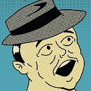
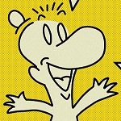

| Title of Work | Medium | Comments on Work |
|---|---|---|
| "Checkmate" | Digital 3D Model Render | This assigment was done following a 3D modelling tutorial, but I was allowed to freely add my own twist after the initial lesson. I aimed to give the pieces a gothic spin and color scheme. |
|  "Visions Unveiled" Poster 1 | Digital Graphic | One of a series of posters I needed to make for a graphic design class. I was assigned to create a series of posters for a hypothetical comic book convention, and for this poster I decided to go for a classical 60s style comic book look, and couldn't help but include a nod to Superman. |
|  "Visions Unveiled" Poster 2 | Digital Graphic | Another part in the "Visions Unveiled" convention poster series. This work was inspired more by Sunday comics. The fellow in the hat was particularly inspired by "Bone" and the nerdy gentleman was largely based on "Dilbert". |